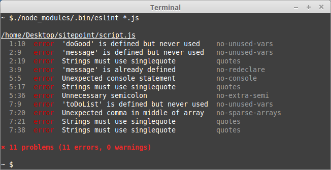

Coding standards are something that, I believe, everyone finds annoying at first. It feels like it’s sometimes just nitpicking on random things like “no shadowed declarations”… who cares? Just drop in a /** eslint-disable */ comment and move on. Once you start being the one who has to read code with all these seemingly random nitpicks, however, is when you realize the importance of maintaining coding standards. I usually just follow the default ruleset that comes from ESLint, a static code analyzer that helps maintain these coding standards by helping find and fix problems in JavaScript code.
Overtime, I feel like my entire coding style with JavaScript basically “conforms” with the standard that ESLint comes with by default. I used to be annoyed with how much ESLint was correcting me, but I’ve found that I just started subconsciously writing the right code with the proper practices that ESLint has forced me to conform with. I think that for beginners, using some sort of linting tool could be a great way to learn good coding practices that make your code more understandable to others.
Although I’ve only been using ESLint with IntelliJ for a week or two in my software engineering class, I have always set up ESLint and Prettier on most of my personal projects for years. I don’t always agree with how it formats sometimes, like I feel that it may be unnecessary to split a function chain into new lines, but I think that you just get used to it and move on. Usually I take the approach of fixing the ESLint errors as I go, but some people may prefer to write everything in their style first, then run lint and fix it after. I think both methods are alright, but definitely fixing while going is probably the best way to learn as it will remind you every time you made that same mistake. Main takeaway is that, make sure you are learning and refining your own skills to write code that is less probable to cause errors.